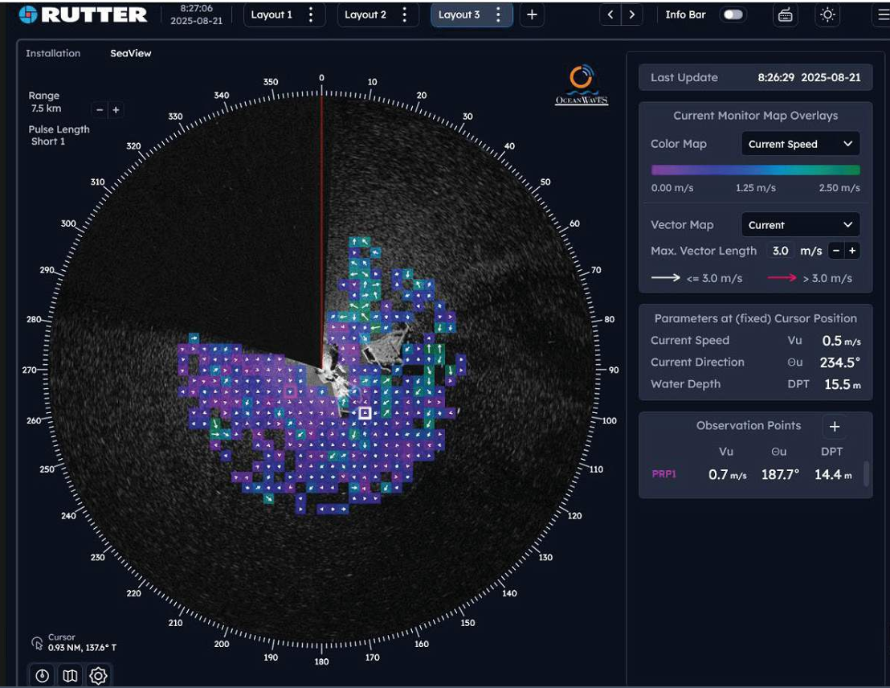
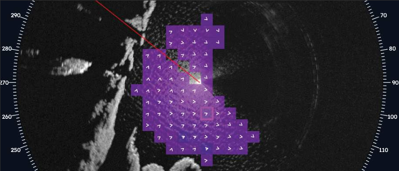
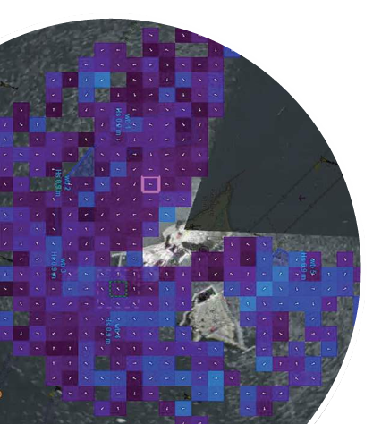

Real-Time, High-Resolution Measurements
Measures and delivers high-resolution ocean surface current data from moving stations, and both current and bathymetry from fixed locations.
Real-time current intelligence to support marine operations, planning, and post-mission reporting with a clear operational picture.
Measures and delivers high-resolution ocean surface current data from moving stations, and both current and bathymetry from fixed locations.
Enhances oil spill drift prediction, navigational safety, and coastal protection while reducing risk during harbour entry and in challenging waterways.
Minimizes cost by reducing reliance on in-water sensors such as wave buoys.

Visualize surface currents in real time.
sigma S6 Current Monitor is a radar-based monitoring system that delivers ocean surface current data with high spatial resolution. It supports marine operations such as oil spill drift prediction, safer navigation, and coastal protection without requiring in-water assets.
Current Monitor also displays bathymetry from fixed locations in shallow water, helping teams monitor sedimentation and erosion processes and better understand dynamic coastal behavior.
Current Monitor maps support decisions for offshore operations, port authorities, and coastal management teams with frequent updates that capture morphodynamic changes over time and storm events.

Use this video area for walkthroughs, live-capture demonstrations, or deployment explainers that show operators exactly how Current Monitor supports day-to-day decisions.
Drop your MP4 into src/media/current-monitor-overview.mp4 to activate playback.
All sigma S6 products can be combined on one IEC 60945 Radar Data Processor to simplify deployment and scale capability across operations.

sigma S6 Current Monitor package: